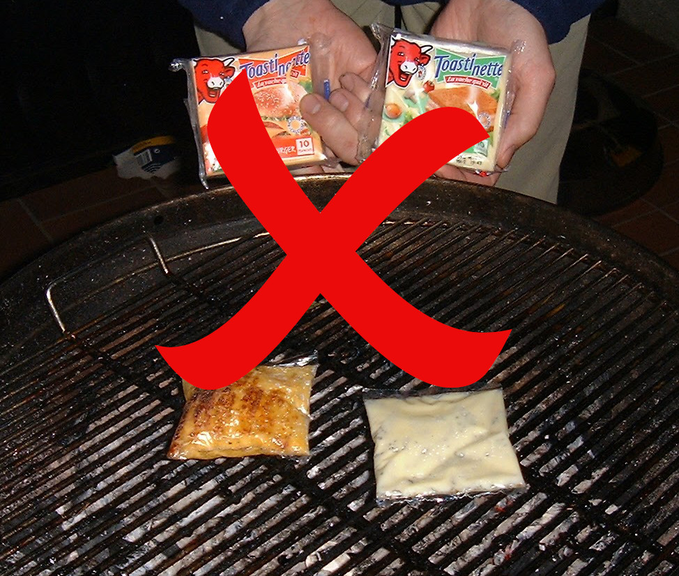

We recommend the use of a disposable BBQ as sold in many DIY stores. This simplifies clean-up in the event of cheese spillage (which is common in a big tournament) and plastic melting (which should only occur if the BBQ is far too hot - see below). Also the latticed grill prevents cheese slices falling through and is relatively close to the coals.
The key to a good cheese racing session is the temperature of the BBQ. Too hot and the plastic will start to burn and possibly even melt. Too cold and your cheese will take ages to rise or may not rise at all! Generally we advise using the following method to prepare your disposable BBQ for cheese racing.
Cook your food as normal (meat based food helps as the fat that drips onto the coals helps keep the BBQ going for long after cooking is done - cheese racing on a veggie BBQ is not recommended).
Eat the food.
By this time the BBQ should have died down just enough to provide optimum cheese racing conditions. There should be no flames but the coals should still be glowing slightly.
The number of rounds you can get through before the BBQ becomes too cold will vary, but provided your food had a high fat/meat content and you don't spend too long eating the food - you should be able to get at least 10 rounds in per BBQ.
The other key to a good cheese racing session is the choice of cheese. We have conducted extensive trials of different makes/types of cheese slices and after some embarrassing failures (when promoters of the sport tried to demonstrate cheese racing to some uninitiated friends using sub-standard cheese and nearly brought the whole sport of cheese racing into disrepute), we have come to following conclusions.
Do NOT use diet/low fat cheese slices - these products do not rise. Suspected Reason: lack of fat.
We also do not recommend supermarket own brand cheese. There may be some that work reliably but many don't. Suspected Reason: cheap imitations of the real thing (see below)
Excellent results are always achieved with Kraft(TM) cheese slices **. There may be others out there just as good - but we haven't found any. Put it this way - we professionals now never use anything else.

If you are still struggling to achieve satisfactory inflation then read about the Cavalaire-Sur-Mer Experiments.
Pro Tips
When placing your cheese - go for the hot spot! Obviously you must be fair to your fellow players and not place your cheese right in the middle leaving no room for your opponents (see rules), but often a pattern of winners will emerge and one side/corner will give you a significant advantage.
There is much debate in the cheese racing world about the merits of placing your cheese seam up (uppie) or seam down (downie). Conventional wisdom holds that seam down is the logical choice as the melted cheese will help 'seal' the plastic at the weak point (the seam) and thus result in less gas loss and faster inflation. However in practice just as many tournament winners have used the uppie method to great effect. We believe that other factors may well be more important - so use what ever method works best for you.